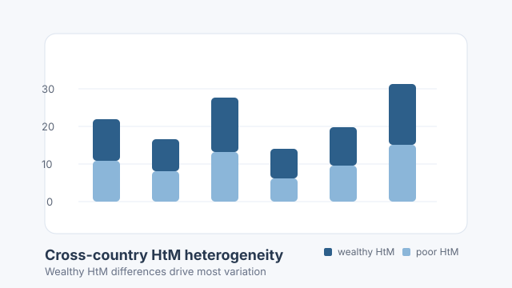

What Drives the Cross-Country Differences in Hand-to-Mouth Shares?
Household heterogeneity
Financial conditions
Life-cycle model
Recent literature has highlighted that differences across countries in the share of Hand-to-Mouth households (HtM) are important for the transmission of aggregate shocks as well as monetary and fiscal policy. How can we explain cross-country differences in the share of hand-to-mouth households? In this paper, we first document significant heterogeneity in the share of HtM households across European countries.
This heterogeneity is driven by large differences in the share of wealthy HtM households, who hold illiquid but no liquid wealth. On the contrary, the share of poor HtM, who hold neither liquid or illiquid wealth, is similar across countries. Second, we develop a two-asset life-cycle model with incomplete markets and uninsurable income risk and calibrate it to Spain. Through the lens of the model we study the role country differences in income risk, the life-cycle profile of earnings and retirement benefits.
Although we report substantial differences across countries in mean income, risk and retirement benefits, results suggest that they cannot explain cross-country differences in HtM shares by themselves. On the other hand, differences in financial conditions are able to explain, ceteris-paribus, 51% of the differences in HtM shares, by explaining 68% of W-HtM shares.
- BCU Annual Conference 2024, LACEA LAMES 2024